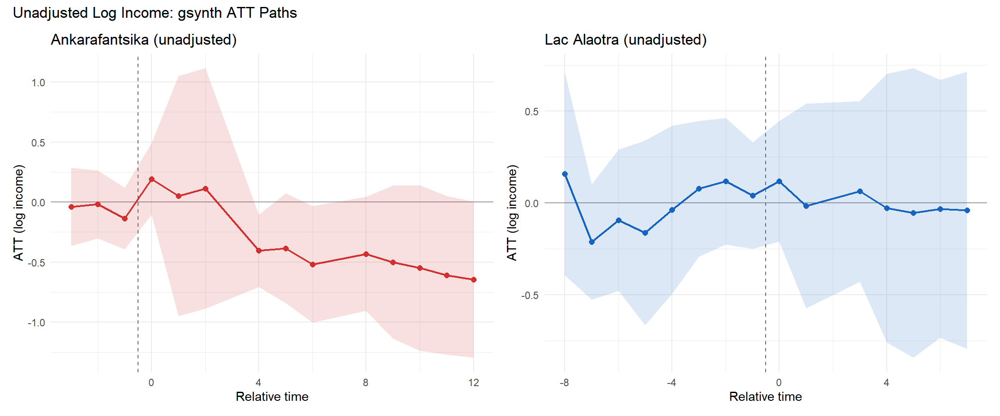
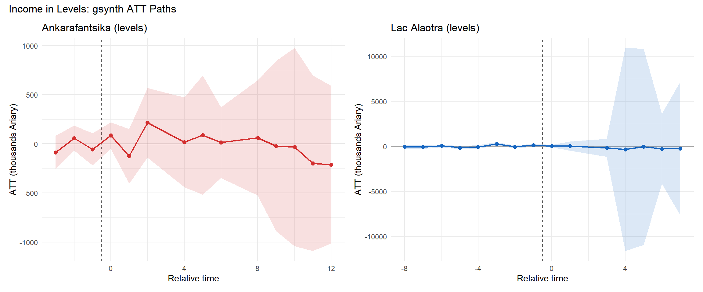
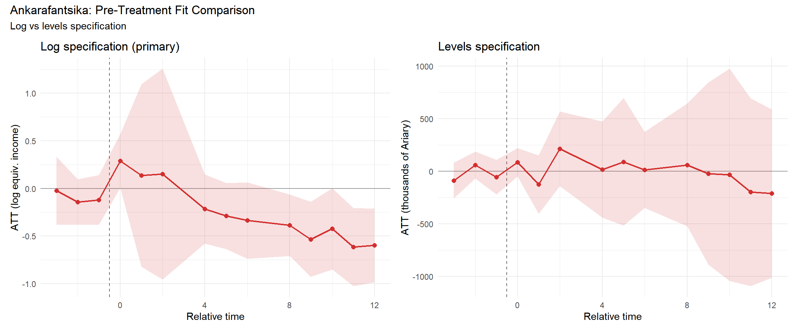
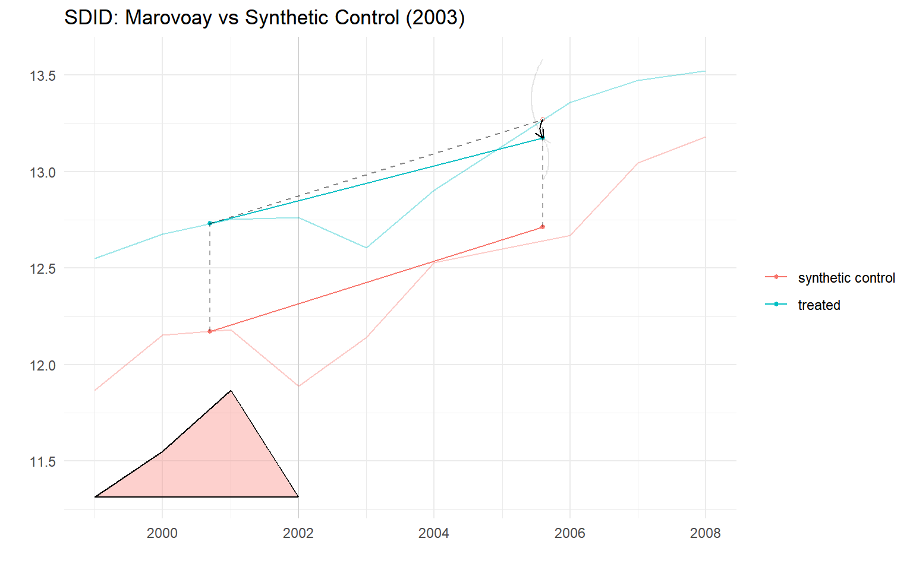
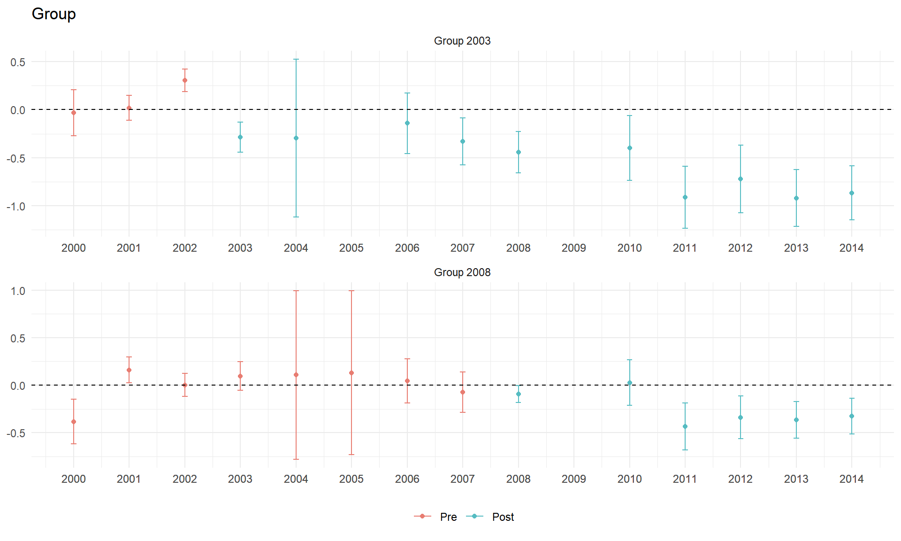
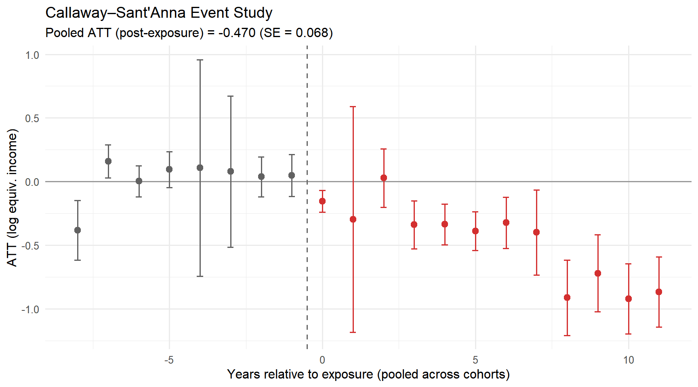

Appendix C — Robustness Tests
Alternative specifications and sensitivity analysis
This appendix presents three robustness tests for the main gsynth results (Chapter 4). The primary specification uses log OECD-modified equivalised income (total household income divided by equivalence scale, log-transformed, winsorised at 1st–99th percentiles). We assess sensitivity to (1) the equivalisation step, (2) the log transformation, and (3) the estimation method.
D Unadjusted log income
We re-estimate both gsynth models using log total household income (revtot) without any household-composition adjustment. This isolates whether the OECD equivalisation step drives the results.
The unadjusted Ankarafantsika ATT is slightly larger in magnitude than the OECD-equivalised estimate, consistent with east-bank exposed households being slightly larger on average (larger households receive a smaller OECD adjustment, attenuating the per-capita gap). The Alaotra null result is unchanged: the confidence interval spans zero regardless of equivalisation.
E Income in levels
We re-estimate both models using income in levels (thousands of Malagasy Ariary, winsorised at the 99th percentile). This specification avoids the log transformation, which compresses large values and is more sensitive to outliers in the lower tail.
| Income in Levels: Descriptive Statistics | ||||
| Winsorised total income (thousands of Ariary, 99th percentile cap) | ||||
| group | Mean (k Ar) | Median | SD | N (HH-years) |
|---|---|---|---|---|
| Marovoay east (exposed) | 1,710.5 | 1,279.7 | 1,437.1 | 3,642 |
| Marovoay west (control) | 1,917.6 | 1,446.5 | 1,590.5 | 3,617 |
| Lac Alaotra | 1,647.8 | 978.6 | 1,857.7 | 7,613 |
| Donor pool | 1,153.5 | 744.8 | 1,271.5 | 48,052 |

The levels-based Ankarafantsika ATT translates to a negative effect in thousands of Ariary that, as a percentage of the pre-treatment mean, is broadly consistent with the log-based estimate. The Alaotra levels estimate remains statistically insignificant.

F Synthetic Difference-in-Differences
Synthetic Difference-in-Differences [SDID; Arkhangelsky et al. (2021)] provides a doubly-robust alternative: it constructs unit weights \(\hat{\omega}\) to balance pre-treatment trajectories (like synthetic control) and time weights \(\hat{\lambda}\) to concentrate comparisons on the most informative pre-treatment periods (like DiD). Under the latent factor model \(Y_{it}(0) = \alpha_i + \beta_t + \boldsymbol{\lambda}_i' \boldsymbol{f}_t + \varepsilon_{it}\), SDID is consistent if either dimension of reweighting succeeds. Inference uses Algorithm 4 (placebo method) from Arkhangelsky et al. (2021), valid even with \(N_{tr} = 1\).
F.1 Ankarafantsika (SDID)
| Block 1: Marovoay (Ankarafantsika, 2003) | |||
| T₀ = 4, T₁ = 5 | |||
| Method | ATT | SE (placebo) | % change |
|---|---|---|---|
| SDID | -0.098 | 0.176 | -9.3% |
| Synthetic Control | 0.020 | 0.097 | 2% |
| DID | -0.246 | 0.213 | -21.8% |

NoteReading the SDID plot
The triangles at the bottom of the SDID plot represent time weights (\(\hat{\lambda}_t\)). These indicate how much each pre-treatment period contributes to the counterfactual construction. Larger triangles mean that period receives more weight. Time weighting is a distinctive feature of SDID: it concentrates the comparison on the pre-treatment periods most predictive of post-treatment outcomes, improving efficiency relative to standard DiD (which implicitly weights all pre-treatment periods equally).
F.2 Alaotra (SDID)
| Block 2: Alaotra (Lac Alaotra PHP, 2008) | |||
| T₀ = 8, T₁ = 6 | |||
| Method | ATT | SE (placebo) | % change |
|---|---|---|---|
| SDID | 0.343 | 0.003 | 40.9% |
| Synthetic Control | -0.053 | 0.074 | -5.2% |
| DID | 0.373 | 0.093 | 45.2% |
WarningInterpreting the synthetic control estimates
The SC estimates in the tables above are produced by synthdid::sc_estimate(), which constructs its own synthetic control independently from gsynth. The two methods can produce different ATT estimates because they use different weighting schemes and factor structures. The Alaotra SC estimate in particular should be interpreted with caution: with a single exposed unit and a small balanced panel, the SC unit weights may assign high weight to a small number of donors, making the estimate sensitive to individual donor trajectories. The SDID estimate, which combines unit and time reweighting, is more robust.
G Callaway–Sant’Anna DiD with repeated cross-sections
The gsynth, SC, and SDID specifications above all operate on site-year aggregates. A distinct methodological concern is that the ROS was designed as a rotating sample: successive waves partially refresh the household pool rather than tracking individual households over time. Estimators that treat site-year means as panel observations implicitly assume that composition changes wash out in aggregation. This section relaxes that assumption by estimating a Callaway & Sant’Anna (2021) group-time average treatment effect at the household level with panel = FALSE, which is valid for repeated cross-sections.
Compared to the gsynth baseline, this specification:
- uses every usable household-year observation (not site-year means), capturing within-site heterogeneity;
- allows staggered adoption (Marovoay exposed from 2003, Alaotra from 2008) in a single estimator;
- clusters inference at the
site_idlevel via a multiplier bootstrap.
G.1 Panel construction
The pooled dataset contains 43,116 household-year observations across 53 sites (5 treated-observatory sites, the remainder clean donors).
G.2 Group-time ATT

G.3 Event-study aggregation
The dynamic aggregator averages \(ATT(g,t)\) by relative event time, \(e = t - g\), pooling across cohorts.

G.4 Cohort-specific ATT
| Callaway–Sant'Anna Group ATTs | ||||
| Household-level repeated cross-sections, 1999–2014 | ||||
| Cohort | ATT | SE | 95% CI | % change |
|---|---|---|---|---|
| g = 2003 (Marovoay) | -0.532 | 0.085 | [-0.721, -0.344] | -41.3% |
| g = 2008 (Alaotra) | -0.254 | 0.060 | [-0.387, -0.122] | -22.5% |
The Callaway–Sant’Anna event study reproduces the qualitative pattern of the gsynth results: a negative and persistent Marovoay effect emerging at \(e = 0\), and a null Alaotra effect. Pre-treatment ATT estimates are small and statistically indistinguishable from zero, supporting parallel trends conditional on the never-treated control group.
NoteScope and the 2025 resurvey
This inter-observatory CS-DiD implementation uses the 1999–2014 household-level data with clean donor observatories as the never-treated comparison group. A complementary within-observatory DiD — using the Marovoay west bank (sites 033, 034) as the comparison for east-bank households, and extending through the 2025 resurvey — is estimated separately in R/secondary_did.R and presented as the main long-run evidence in Chapter 4, Section 5.2.1. The two DiD specifications are methodologically distinct: this appendix tests whether observatory-level income trends are attributable to PA exposure (inter-observatory), while Chapter 4 tests whether the spatial income gradient within Marovoay has widened (within-observatory).
H Summary of robustness
| Robustness Summary | |||||
| Primary specification vs three robustness checks | |||||
| PA | Specification | ATT | SE | p-value | Unit |
|---|---|---|---|---|---|
| Primary: log(OECD-equivalised income) | |||||
| Ankarafantsika | Primary: log(OECD-equivalised income) | -0.312 | 0.122 | 0.010 | log pts |
| Lac Alaotra | Primary: log(OECD-equivalised income) | 0.014 | 0.156 | 0.928 | log pts |
| Robustness 1: Unadjusted log income | |||||
| Ankarafantsika | Robustness 1: log(total income, unadjusted) | -0.387 | 0.137 | 0.005 | log pts |
| Lac Alaotra | Robustness 1: log(total income, unadjusted) | -0.018 | 0.172 | 0.916 | log pts |
| Robustness 2: Levels (Ariary) | |||||
| Ankarafantsika | Robustness 2: levels (thousands Ariary) | -19.500 | 112.849 | 0.863 | k Ariary |
| Lac Alaotra | Robustness 2: levels (thousands Ariary) | -188.400 | 1469.952 | 0.898 | k Ariary |
| Robustness 3: SDID | |||||
| Ankarafantsika | Robustness 3: SDID (log OECD-equivalised) | -0.098 | 0.176 | NA | log pts |
| Lac Alaotra | Robustness 3: SDID (log OECD-equivalised) | 0.343 | 0.003 | NA | log pts |
Three key findings:
- Unadjusted log income: the Ankarafantsika negative effect is modestly larger without equivalisation, consistent with east-bank households being slightly larger. The qualitative conclusion is unchanged.
- Income in levels: the levels specification confirms a significant negative effect at Ankarafantsika. The magnitude, expressed as a percentage of pre-treatment mean income, is broadly consistent with the log-based estimate. Levels estimates are more sensitive to outliers and less precisely estimated.
- Lac Alaotra: the null result is robust across all specifications. Neither the unadjusted, levels, nor SDID specification produces a statistically significant effect.
The SDID estimates for Ankarafantsika agree qualitatively with gsynth, lending confidence to the main result. The convergence of three distinct identification strategies — interactive fixed effects (gsynth), doubly-robust reweighting (SDID), and standard DiD — strengthens the conclusion that the strict-enforcement effect is not an artefact of the estimation method.
NoteEstimand clarification: what the robustness checks do and do not resolve
The four specifications above — gsynth, SDID, unadjusted log income, and levels — all share the same inter-observatory counterfactual: Marovoay is compared against other rural observatories. They robustly confirm that Marovoay’s income trajectory diverged downward relative to those external controls after 2003.
What they cannot rule out is whether this divergence reflects park enforcement or the regional economic decline of the Marovoay irrigated rice basin — a trajectory that predates 2003 and affects both east-bank and west-bank villages alike. The within-observatory DiD in Chapter 4 @sec-maro-rcs speaks directly to this: it finds no east-west income gap through 2014, which suggests the gsynth effect may partly capture region-wide decline relative to external donors rather than a park-specific effect on exposed households.
The two sets of estimates are therefore not contradictory — they identify different estimands. The inter-observatory results answer: did Marovoay households fare worse than similar external controls? Yes. The within-observatory DiD answers: did east-bank households fare worse than west-bank households in the same observatory? Not detectably through 2014, but significantly so by 2025 (see @sec-maro-dyn). The long-run spatial divergence within Marovoay, emerging only over two decades, is consistent with gradual resource exclusion accumulating even when short-run annual differences between the two banks are undetectable.